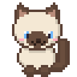
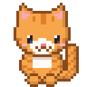
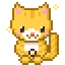
'월가아재의 과학적 투자' 영상을 볼수록 고양이가 자라고, 새 고양이가 찾아오는 앱이에요.
스토어(플레이 스토어)에 올린 앱이 아니라서 폰이 몇 번 "괜찮겠냐"고 물어봐요. 직접 만든 앱이라 안전하니 아래대로 허용해 주면 돼요.
위의 노란 월가냥 앱 받기 버튼을 눌러요.
"이 파일은 유해할 수 있습니다" 같은 창이 뜨면 다운로드 또는 무시하고 다운로드를 눌러요.
화면 아래나 알림창에 뜬 열기를 눌러요.
내 파일 앱 → 다운로드 → 월가냥.apk 를 눌러요.
"출처를 알 수 없는 앱" 이라는 창이 뜨면:
그래도 "Play 프로텍트" 창이 뜨면 세부정보 더보기 → 무시하고 설치(또는 그래도 설치)를 눌러요. (앱 검사를 권하면 검사하지 않음을 눌러도 돼요.)
앱 목록에 노란 고양이 아이콘 월가냥이 생겼어요. 열기를 눌러요.
'설치 중…' 막대가 차다가 "앱이 설치되지 않았습니다"로 끝나면, 폰이 이유를 안 보여 주는 거예요. 설치 도우미가 월가냥을 대신 설치하고, 안 되면 진짜 이유를 화면에 보여 줘요.
맨 위 하얀 설치가 안 되면: 설치 도우미 받기를 눌러 받고, 월가냥 때처럼 열어서 설치해요.
도우미 안에 월가냥이 들어 있어요. 알림 접근 같은 권한이 없어서 도우미는 보통 바로 설치돼요.
초록 설치 완료!가 뜨면 월가냥 열기를 누르고 "2. 처음 설정"으로 가면 돼요.
빨간 칸에 이유와 할 일이 나와요. 그대로 해 보고, 그래도 안 되면 결과 보내기 (카톡 등)로 남자친구에게 보내 주세요. 폰 기종·버전과 정확한 오류가 다 들어 있어서 바로 고칠 수 있어요.
월가냥이 "지금 유튜브에서 월가아재 영상이 나오고 있구나"를 알아차리고 알려 주려면 허락이 세 개 필요해요. 처음 열면 이 화면이 나와요.
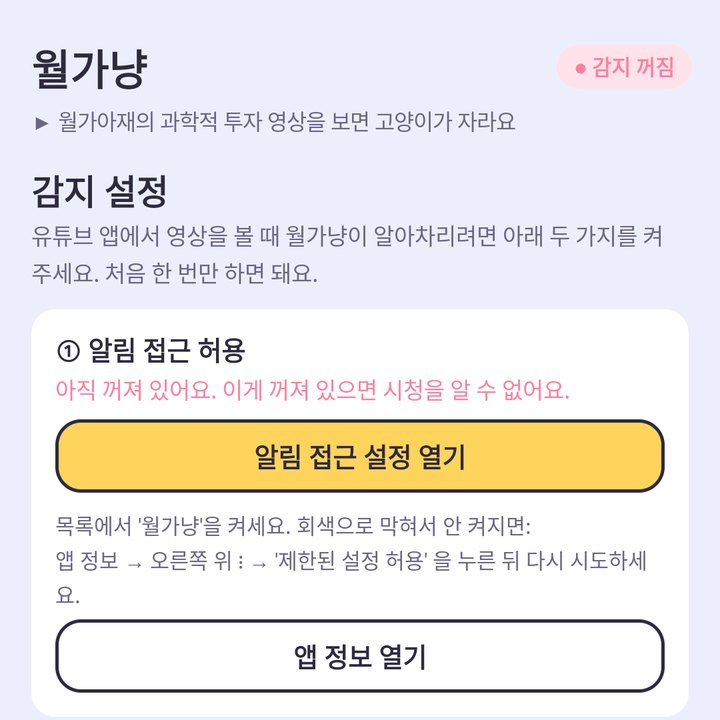
알림 접근 설정 열기를 눌러요. 앱 목록에서 월가냥을 찾아 스위치를 켜고 허용을 눌러요. 그다음 뒤로 가기로 월가냥에 돌아와요.
알림 내용을 읽거나 보내는 게 아니에요. 안드로이드에서 '지금 재생 중인 영상 제목'을 보려면 이 허락이 필요해서 그래요.
배터리 설정 열기를 누르고, 뜨는 창에서 허용을 눌러요.
갤럭시는 배터리를 아끼려고 안 쓰는 앱을 재우는데, 그러면 시청 시간을 못 세요. 월가냥은 영상이 나올 때만 잠깐 일해서 배터리를 거의 안 써요.
처음 열 때 "알림을 보내도록 허용할까요?" 창이 뜨면 허용을 눌러요.
그리고 ③ 고양이 소식 받기 칸의 다른 앱 위에 표시 허용을 눌러요. 목록에서 월가냥을 찾아 스위치를 켜고, 뒤로 가기로 돌아와요.
고양이 등장 미리 보기를 누르면 고양이가 화면 가운데로 걸어 나와요. 나오면 성공!
이걸 켜 두면 유튜브를 보다가 새 고양이가 왔을 때 바로 알 수 있어요.
유튜브 앱에서 '월가아재의 과학적 투자' 채널 영상을 아무거나 하나 재생해요.
영상을 켜 둔 채로 월가냥을 열고, 아래 감지 설정 탭 → 아래쪽 ④ 지금 감지된 재생을 봐요.
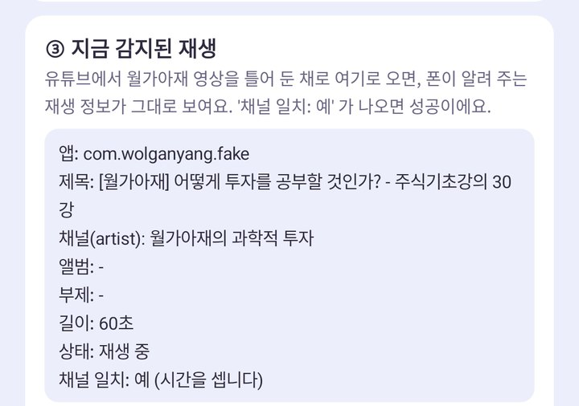
채널 일치: 예 가 보이면 성공이에요!
월가냥은 켜 두지 않아도 돼요. 유튜브 화면에는 아무것도 안 뜨고, 뒤에서 영상이 재생되는 시간만 조용히 세요.
처음엔 아기 고양이 한 마리가 와요. 영상을 본 시간만큼 자라요.
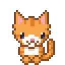
아기처음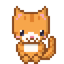
청소년1시간다 자라면 새 아기 고양이가 찾아와요. 평범한 고양이는 8종이고, 매번 아직 없는 종류가 와요.
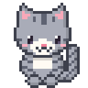
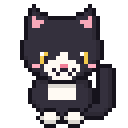
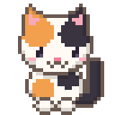
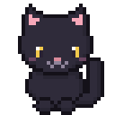
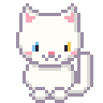
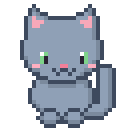
영상을 보다가 새 고양이가 오거나 고양이가 자라면, 유튜브 화면 위 가운데로 고양이가 걸어 나와서 알려 줘요.
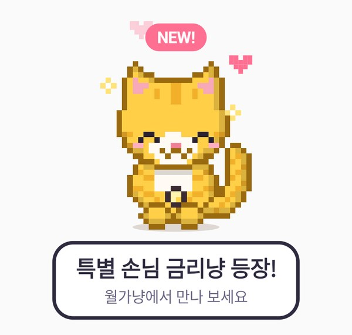
5초쯤 뒤 알아서 걸어 나가고, 누르면 바로 사라져요. 알림창에도 소식이 남아요.
조건을 채우면 바로 어른 모습으로 찾아와요. 제목 조건은 그 말이 들어간 영상을 끝까지(70% 넘게) 봤을 때예요.
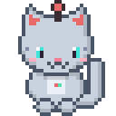
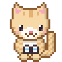
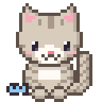
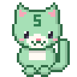
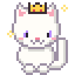
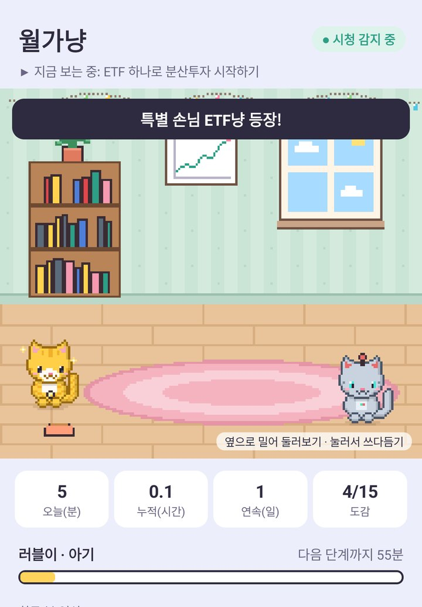
평범한 고양이 8종과 특별한 고양이 7종을 모두 모으면 도감 완성 화면이 떠요. 그 뒤로 고양이는 더 오지 않고, 공부 기록만 계속 남아요.
하루 영상 한 편(20분쯤)이면 평범한 고양이 8마리까지 두 달 정도 걸려요.
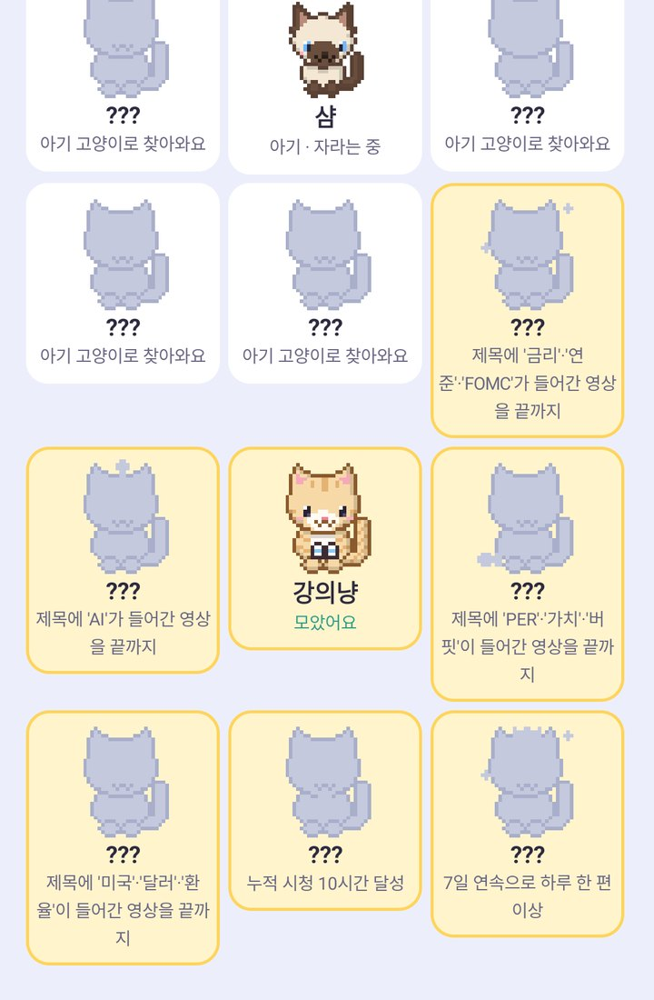
월가냥 → 감지 설정 탭에서 ①②에 초록 ✓ 가 있는지 봐요. 둘 다 있는데도 안 되면 폰을 한 번 껐다 켜고, 월가냥을 한 번 열어 주세요. 그래도 안 되면 3번 확인 화면을 캡처해서 보내 주세요.
휴대폰 설정 → 애플리케이션 → 월가냥 → 다른 앱 위에 표시를 끄면 돼요. 그러면 알림창으로만 소식이 와요.
아니요. 유튜브만 보면 돼요. 월가냥은 고양이 보고 싶을 때만 열면 돼요.
인터넷은 아예 안 써요(인터넷 권한 자체가 없어요). 배터리도 영상이 나올 때 10초에 한 번 시간을 적는 정도라 거의 안 써요.
아무 데도 안 가요. 본 영상 제목과 시간은 이 폰 안에만 저장돼요.
모은 고양이와 기록이 모두 사라져요. 지우지 말아 주세요.
이 페이지에서 다시 월가냥 앱 받기 → 열기 → 업데이트를 누르면 돼요. 기존 앱을 지우지 않고 덮어 설치하면 고양이와 기록이 그대로 남아요. 설치 도우미로 설치했다면 새 도우미를 받아 같은 버튼을 눌러도 돼요.
폰이 이유를 숨긴 거예요. 설치 도우미를 쓰면 진짜 이유가 보여요.